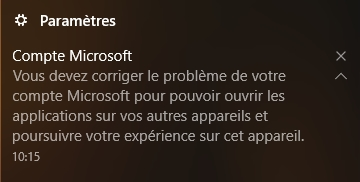

Ah ! Cet erreur ne peut se produire sur tous les logiciels appx demandant un adresse mail que si votre PC n'est pas à jour (ex : Mail et Calendrier, Contact...) (exemple avec Xbox)
De plus il est possible que vous receviez ce message et que vous ne sachez pas le résoudre :
La seule solution serait de mettre à jour Windows.
Par contre, si le problème ne se produit que sur un logiciel, essayez de le réinitialiser ou de le désinstaller puis le réinstaller.